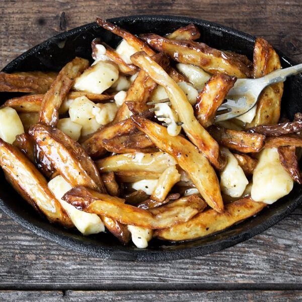

Macaroni and Cheese

Description
Authentic Canadian Poutine featuring deep-fried fries, poutine gravy, and white cheddar cheese curds
Ingredients
Gravy
- 3 Tbsp cornstarch
- 2 Tbsp water
- 4 Tbsp unsalted butter
- 1/4 cup flour
- 20oz beef broth
- 10oz chicken broth
- Pepper
Fries
- 2 lbs. potatoes
- Cooking oil
Toppings
- 1 1/2 cups white cheddar cheese curds
Steps
- Prepare the gravy: In a small bowl, dissolve the cornstatch in the water and set aside.
- In a large saucepan, melt the butter. Add flour and cook, stirring regularly, for about 5 minutes, until the mixture turns a golden brown.
- Add the beef and chicken broth and bring to a boil, stirring with a wisk. Stir in about HALF of the cornstarch mixture and simmer for a minute or so. If you'd like your gravy thicker, add more of the cornstarch mixture, in small increments, as needed, to thicken. Season with pepper. Taste and add additional salt, if nessessary, to taste
- Fries: Prepare your potatoes and cut into 1/2-inch thick sticks. Place into a large bowl and cover completely with cold water. Allow to sit atleast 1 hour or several hours. When ready to cook, heat your oil in your deep fryer or a large cooking pot to 300 degrees
- Remove potatoes from the water and place onto a sheet of paper towel. Remove as much excess moisture as possible
- Add your fries to the 300 degrees oil and cook for 5-8 minutes, just until potatoes are starting to cook, but are not yet browned. Remove potatoes from oil and scatter on a wire rack. Increase oil temperature to 375. Once the oil is heated to that temperature, return the potatoes to the fryer and cook until potatoes are golden brown. Remove to a paper towel-lined bowl
- Prepare Poutine: Add your fried or baked fries to a large, clean bowl. Season lightly with salt while still warm. Add ladle of hot poutine gravy to the bowl and using tongs, toss the fries in the gravy. Add more gravy, as needed to mostly coat the fries.
- Add the cheese curds and toss with the hot fries and gravy. Serve with freshly ground pepper. Serve immidiately